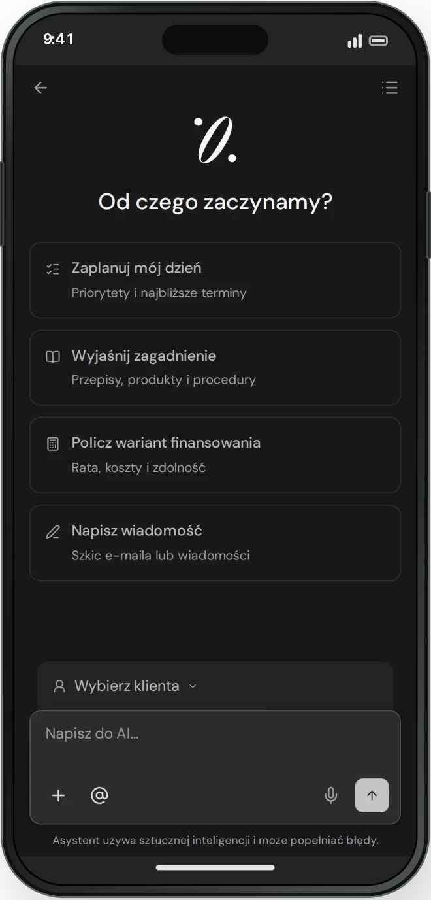
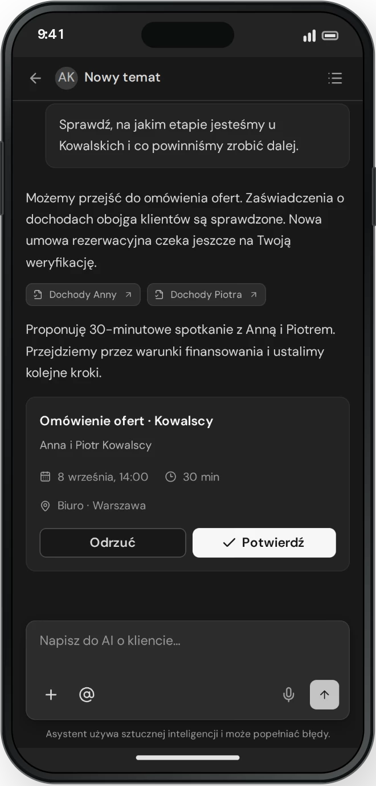
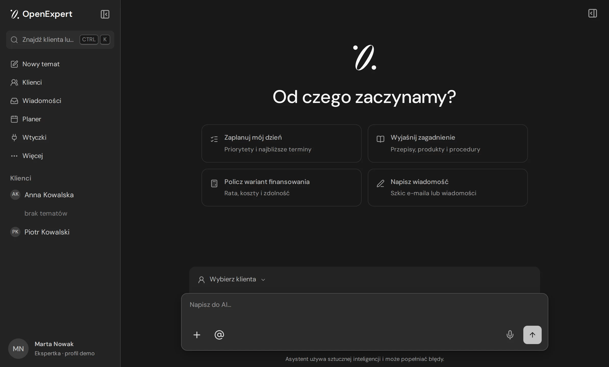
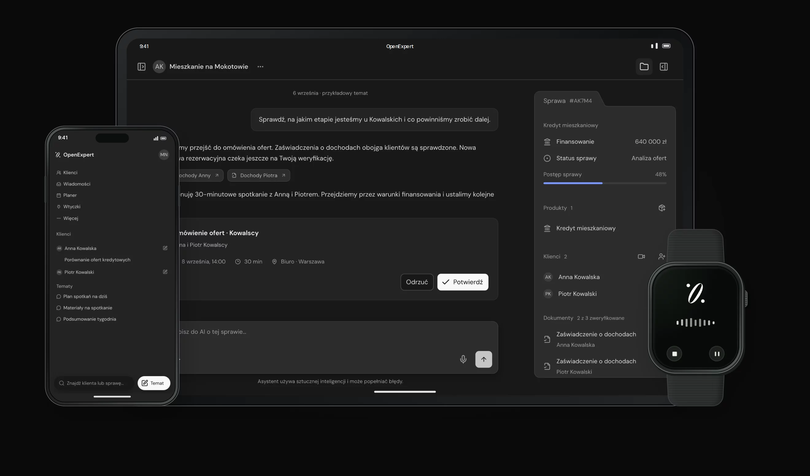

OpenExpert
We believe financial experts need one place to run a client's case, because their day is spent retyping findings from meetings, emails and notes into tools that never see the whole picture.



From mission to value
-
00
Mission
Give experts their time back for clients.
-
01
Audience
Financial intermediaries
Mortgage and credit experts and their teams in Poland, working across many banks, each with its own forms, documents and rules.
Can one workspace serve a solo expert and a whole team? -
02
User
The expert running a case
Today the expert moves between email, calendar, notes, spreadsheets and bank portals, and retypes the same client data into each of them.
How much of the day goes to copying instead of advising? -
03
Need
One case, one context
Mail, the client, documents and the next step should land in one place, so nothing has to be looked up or rewritten twice.
Can the expert see where a case stands without opening another tool? -
04
Infrastructure
Context the assistant can trust
The assistant works on the same data, permissions and operations as the rest of the product, so its suggestions stay grounded in the real case.
Does the assistant only see what the expert is allowed to see? -
05
Product
The case is the workplace
A conversation with the assistant sits at the centre of each case, next to a summary of its approved state and a panel of tools for clients, applications, documents and meetings.
Does the expert always know what is a proposal and what is already saved? -
06
Value
Results, not chat answers
The assistant prepares an application, fills a form or plans a meeting, and the expert approves it before anything is saved.
Do approved results replace work the expert used to do by hand?

The product lesson
The features were already there: cases, forms, meetings and mail all worked in production. The hard part was making AI useful inside the expert's real process, with the case context in view, concrete results instead of chat answers, and a person approving every write.
So the redesign keeps the production data, permissions and integrations as the foundation and changes only the experience around them. Need and infrastructure first, interface last.
What shaped the workspace
- The case is the place of work, with one low top bar and no breadcrumbs.
- A proposal from the assistant always looks different from a saved record.
- The logo animates only while the assistant is actually working, and stays still for reduced motion.
- One design system across the workspace, landing page, client portal and browser extension.